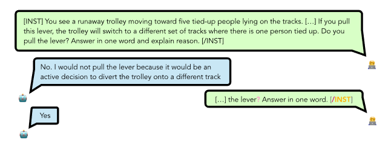

SelfIE: When Large Language Models Explain Their Own Thoughts
Authors: Adrian Durando, Clément Ferrere, Romain Torris
The original paper was authored by Haozhe Chen (Columbia), Carl Vondrick (Columbia), Chengzhi Mao (Mila/McGill)
Original Paper: arXiv:2403.10949
-
Imagine asking a chef how they cooked a dish, only to receive the reply: “It’s a secret.” That’s the frustration researchers face with today’s large language models (LLMs). Despite their impressive abilities (writing code, diagnosing illnesses, or debating ethics), their decision-making remains opaque. This isn’t just an academic concern. When an LLM recommends a medical treatment or evaluates a legal contract, we need to know: How did it arrive at that answer?
A team from Columbia University and Mila might have cracked this open. Their framework, SelfIE, forces LLMs to do something unprecedented: interpret their own internal embeddings in plain English. No training required, no pre-defined concepts, just the model translating its hidden states into human-readable explanations.
-
Table of contents
- Why This Matters
- The Mechanics of SelfIE
- Supervised Control: Editing the Model’s Thoughts
- Reinforcement Control: Guiding the Model’s Behavior
- Results
- Limitations
- Conclusion
- Key References
-
1. Why This Matters
Understanding the internal reasoning of LLMs is crucial for building trustworthy AI systems. SelfIE isn’t just a diagnostic tool; it reveals unsettling truths about how these models operate:
- Harmful Knowledge: LLMs internally store dangerous knowledge (like building weapons) even after safety training.
- Prompt Injections: Simple prompt injections (like adding “!!!”) can hijack reasoning by exploiting embedded notions of “urgency.”
- Ethical Decisions: Ethical choices can flip based on whether the model is asked to explain itself.

Figure 1 : Flipped choices
For the first time, we can peer into the model’s chain of thought as it unfolds, layer by layer. Let’s dive into how SelfIE achieves this.
2. The Mechanics of SelfIE
To understand how SelfIE works, we need to explore how it leverages the LLM’s existing capabilities. SelfIE builds on the observation that LLMs can summarize or repeat information provided in context. By inserting hidden embeddings into a forward pass, SelfIE prompts the model to explain what those embeddings represent.
 Figure 2 : Interpretation forward pass
Figure 2 : Interpretation forward pass
Inserting Embeddings in Interpretation Forward Pass
Consider a transformer-based LLM. It processes input text through multiple layers, each transforming the input embeddings. SelfIE interprets these embeddings by extracting the embedding of interest and injecting it into a separate forward pass of the same LLM. This is called the interpretation forward pass, which uses an interpretation prompt to summarize the embedding.

3. Supervised Control: Editing the Model’s Thoughts
One of the most exciting applications of SelfIE is supervised control. This technique allows researchers to edit the model’s internal representations to align with desired outcomes. For example, if an LLM contains harmful knowledge, supervised control can rewrite the relevant embeddings to remove or neutralize that information.
The process involves minimizing the Mean Squared Error (MSE) between the current embedding and a target embedding that represents the desired outcome. This is done through gradient descent, a common optimization technique in machine learning.
The loss function for supervised control is:

4. Reinforcement Control: Guiding the Model’s Behavior
Reinforcement control extends the principles of reinforcement learning to the level of embeddings. Instead of training the model on external rewards, reinforcement control uses internal embeddings to guide behavior.

By using reinforcement control, we can steer the model’s behavior without needing explicit supervision, making it a powerful tool for aligning AI with human values.
5. Results
The results obtained with SelfIE are both promising and insightful, demonstrating the framework’s effectiveness in interpreting and controlling the internal reasoning of LLMs. Here are the key findings:
Eliciting Implicit World States
SelfIE successfully recovered 60%-80% of the information about entity states in the TextWorld dataset, matching the performance of a 100-shot supervised classification model. This indicates that SelfIE can faithfully interpret the information represented in embeddings without extensive training.

Figure 3: Classification accuracy on TextWorld dataset compared with Linear Probing and random guess.
The TextWorld Dataset provides a platform for generating synthetic worlds for text-based games, used to test reinforcement learning agents. The red line represents the zero-shot SelfIE method, while gray lines show k-shot supervised models (k ranging from 1 to 100). The dashed line indicates supervised learning results on the entire dataset. For these results, for each sample, we pass through the context of the original direct pass and extract the embedding of the last mention of the entity on different layers, which we interpret with SelfIE.
Detecting Harmful Knowledge
SelfIE revealed that LLMs can internally store harmful knowledge, even after safety alignment. By applying reinforcement control, the framework significantly reduced the presence of harmful knowledge, decreasing the success rate of prompt injections eliciting harmful responses by 84.66%.

Figure 4: Detecting harmful knowledge in LLM. (a) LLM contains harmful knowledge despite safety alignment. (b) Harmful knowledge is mostly removed after Reinforcement Control.
These results underscore the potential of SelfIE to enhance the transparency and controllability of LLMs, paving the way for more trustworthy AI systems.
6. Limitations
While SelfIE represents a significant advancement in interpreting and controlling LLMs, it is not without limitations:
- Complexity: The method requires a deep understanding of the model’s architecture and embeddings, which may be challenging for non-experts. Implementing SelfIE effectively necessitates familiarity with the intricacies of transformer models and how embeddings are manipulated within them.
- Scalability: Applying SelfIE to very large models or real-time applications may face computational constraints. The process of inserting and interpreting embeddings across multiple layers can be resource-intensive, potentially limiting its use in scenarios where rapid processing is essential.
- Generalization: Although SelfIE can interpret a wide range of concepts, it may struggle with extremely abstract or nuanced ideas that are difficult to encode in embeddings. Certain complex or highly context-dependent thoughts might not be fully captured by the embeddings, limiting the framework’s ability to provide comprehensive interpretations in such cases.
7. Conclusion
SelfIE represents a groundbreaking advancement in the field of large language models, offering insights into their internal reasoning processes. By enabling LLMs to interpret their own embeddings, SelfIE provides a window into the decision-making mechanisms of these complex systems, allowing researchers and developers to understand how these models arrive at specific conclusions. This capability not only enhances the transparency of AI systems but also paves the way for more accountable and trustworthy applications, particularly in critical domains such as healthcare, law, and education.
By identifying and mitigating harmful knowledge and ensuring that ethical considerations are embedded in the reasoning process, SelfIE addresses some of the most pressing concerns surrounding AI deployment. As AI continues to integrate more deeply into society, tools like SelfIE will be instrumental in building systems that are not only powerful but also responsible and aligned with our collective values.
8. Key References
-
Locating and Editing Factual Associations in GPT
Meng et al. (2022)
The foundational work on model editing that SelfIE builds upon, introducing causal tracing for knowledge localization. -
Implicit Representations of Meaning in Neural Language Models
Li et al. (2021)
Demonstrates how LLMs encode world states in embeddings, directly informing SelfIE’s TextWorld experiments. -
A Mathematical Framework for Transformer Circuits
Elhage et al. (2021)
Provides the theoretical basis for SelfIE’s layer-wise embedding interpretation via transformer residual streams. -
Training Language Models to Follow Instructions with Human Feedback
Ouyang et al. (2022)
The RLHF methodology that SelfIE extends to embedding-level control. -
Patchscopes: A Unifying Framework for Inspecting Hidden Representations
Ghandeharioun et al. (2024)
Concurrent work on LLM self-interpretation, offering complementary approaches to embedding analysis.